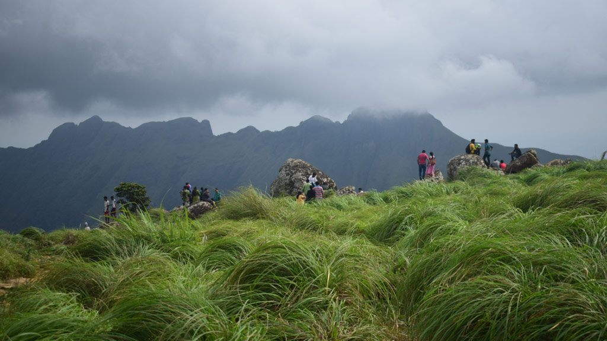

Trekking

Beaches

Kerala, a state situated on the tropical Malabar Coast of southwestern India, is one of the most popular tourist destinations in the country. Named as one of the ten paradises of the world by National Geographic Traveler.Kerala is a popular destination for both domestic as well as foreign tourists. Kerala is well known for its beaches, backwaters, mountain ranges and wildlife sanctuaries. Since its incorporation as a state, Kerala's economy largely operated under welfare-based democratic socialist principles. This mode of development, though it resulted in a high Human Development Index and standard of living among the people, led to an economic stagnation in the 1980s.
Flanked on the western coast by the Arabian Sea, Kerala has a long coastline of 580 km; all of which is virtually dotted with sandy beaches. The backwaters in Kerala are a chain of brackish lagoons and lakes lying parallel to the Arabian Sea coast. Eastern Kerala consists of land encroached upon by the Western Ghats; the region thus includes high mountains, gorges, and deep-cut valleys. The wildest lands are covered with dense forests, while other regions lie under tea and coffee plantations or other forms of cultivation. The Western Ghats rise on average to 1500 m elevation above sea level. Most of Kerala, whose native habitat consists of wet evergreen rainforests at lower elevations and highland deciduous and semi-evergreen forests in the east, is subject to a humid tropical climate. Historical monuments in Kerala include palaces, forts, and religious institutions.